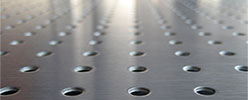
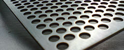
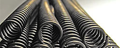
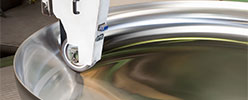
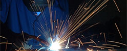

Blachy perforowane
Blachy perforowane - to prawie nieograniczone możliwości projektowe i wykonawcze. Z uwagi na doskonałe właściwości mechaniczne wykorzystywane są w budownictwie a także w przemyśle. Blachy perforowane to efektowne rozwiązanie również w architekturze przy tworzeniu elewacji obiektów handlowych, przemysłowych, biurowych oraz użyteczności publicznej. Różnorakie kształty i wymiary perforacji tworzą ogromne możliwości stosowania także wraz z tradycyjnymi materiałami takimi jak szkło, czy beton.
Siatki
Z powodu niskiej wagi, siatki staja się coraz bardziej popularnym materiałem używanym w budownictwie, przemyśle i architekturze. Siatki są uważane za najbardziej wszechstronny materiał. Mogą służyć jako wypełnienia balustrad, uzupełnienie wyposażenia wnętrz, elementy zewnętrzne fasad, przesłony czy pomosty. Siatki można też stosować jako elementy filtracyjne.


Sprężyny
Oferujemy wiele rodzajów sprężyn z drutu sprężynowego stalowego i
nierdzewnego w przedziale średnic od 0,2 aż do 50,0mm.
Wykonujemy sprężyny wykorzystywane m.in. w górnictwie, przemyśle:
chemicznym, energetycznym, hutniczym, maszynowym, budowlanym, oraz
w rolnictwie i w innych branżach.
Dennice
Dennice stosowane są najczęściej jako zamknięcia pojemników, cystern, zbiorników, rur, bojlerów, kotłów itp. Możemy pochwalić się kilkuletnim doświadczeniem w sprzedaży dennic produkowanych poprzez wyoblanie na zimno i na gorąco. W naszej ofercie można znaleźć także dennice cienkościenne o dużych średnicach.


Stal nierdzewna
Stal nierdzewna jest stopem żelaza i chromu zawierającym 12 - 30% chromu (mający decydujący wpływ na właściwości antykorozyjne), do 30% niklu lub do 24% manganu oraz niewielkie ilości molibdenu, krzemu, miedzi, tytanu, niobu, azotu i innych pierwiastków chemicznych, w najwyżej kilkuprocentowej ilości.
Usługi
Zajmujemy się usługami związanymi z obróbką stali czarnej, nierdzewnej i innych metali. Wykonujemy elementy najwyższej jakości, stosując technologie wycinania laserem, gięcia na krawędziarkach cyfrowych, spawania metodą MIG/TIG, walcowania, i inne. Współpracujemy także z wyspecjalizowanymi kooperantami, a kontrola produkcji umożliwia nam zachowanie niskich kosztów wytwarzania.
